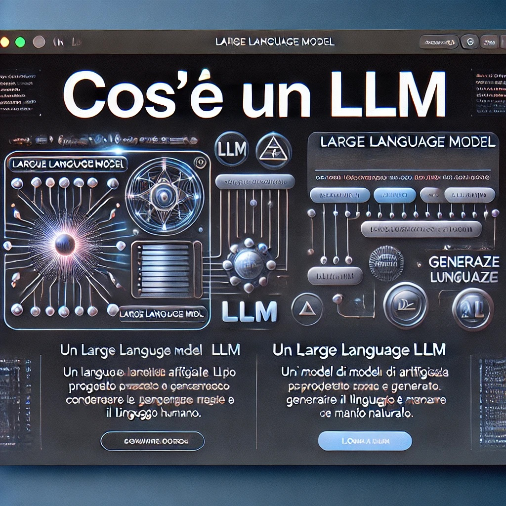

Introduzione agli LLM
Un Large Language Model (LLM) è un tipo di modello di intelligenza artificiale progettato per comprendere, generare e manipolare il linguaggio umano in modo naturale.
Gli LLM sono addestrati su vasti corpus di testo e possono svolgere una varietà di compiti linguistici, dalla traduzione alla generazione di testo creativo.